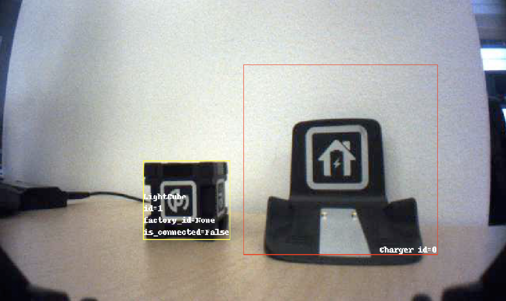

anki_vector.annotate¶
Camera image annotation.
This module defines an ImageAnnotator class used by
anki_vector.camera.CameraImage and
anki_vector.camera.CameraComponent to add annotations
to camera images received by the robot.
This can include the location of cubes and faces that the robot currently sees, along with user-defined custom annotations.
The ImageAnnotator instance can be accessed as
anki_vector.camera.CameraComponent.image_annotator.
Functions
|
Draw a box on an image and optionally add text. |
|
Draw a polygon on an image |
|
A decorator for converting a regular function/method into an Annotator. |
Classes
Specifies where the annotation must be rendered. |
|
|
Annotation base class |
|
Adds annotations of currently detected faces to a camera image. |
|
ImageAnnotator applies annotations to the camera image received from the robot. |
|
ImageText represents some text that can be applied to an image. |
|
Adds object annotations to an Image. |
|
Adds simple text annotations to a camera image. |
-
anki_vector.annotate.RESAMPLE_MODE_NEAREST= 0¶ Fastest resampling mode, use nearest pixel
-
anki_vector.annotate.RESAMPLE_MODE_BILINEAR= 2¶ Slower, but smoother, resampling mode - linear interpolation from 2x2 grid of pixels
-
class
anki_vector.annotate.AnnotationPosition¶ Specifies where the annotation must be rendered.
-
BOTTOM_LEFT= 9¶ Bottom left position
-
BOTTOM_RIGHT= 10¶ Bottom right position
-
TOP_LEFT= 5¶ Top left position
-
TOP_RIGHT= 6¶ Top right position
-
-
class
anki_vector.annotate.ImageText(text, position=<AnnotationPosition.BOTTOM_RIGHT: 10>, align='left', color='white', font=None, line_spacing=3, outline_color=None, full_outline=True)¶ ImageText represents some text that can be applied to an image.
The class allows the text to be placed at various positions inside a bounding box within the image itself.
import time try: from PIL import ImageDraw except ImportError: sys.exit("run `pip3 install --user Pillow numpy` to run this example") import anki_vector from anki_vector import annotate # Define an annotator using the annotator decorator @annotate.annotator def clock(image, scale, annotator=None, world=None, **kw): d = ImageDraw.Draw(image) bounds = (0, 0, image.width, image.height) text = annotate.ImageText(time.strftime("%H:%m:%S"), position=annotate.AnnotationPosition.TOP_LEFT, outline_color="black") text.render(d, bounds) with anki_vector.Robot(show_viewer=True, enable_face_detection=True, enable_custom_object_detection=True) as robot: robot.camera.image_annotator.add_static_text("text", "Vec-Cam", position=annotate.AnnotationPosition.TOP_RIGHT) robot.camera.image_annotator.add_annotator("clock", clock) time.sleep(3)
- Parameters
text (
str) – The text to display; may contain newlinesposition (
int) – Where on the screen to render the text - such as AnnotationPosition.TOP_LEFT or AnnotationPosition.BOTTOM_RIGHTalign (
str) – Text alignment for multi-line stringscolor (
str) – Color to use for the text - seePIL.ImageColorfont – ImageFont to use (None for a default font)
line_spacing (
int) – The vertical spacing for multi-line stringsoutline_color (
Optional[str]) – Color to use for the outline - seePIL.ImageColor- use None for no outline.full_outline (
bool) – True if the outline should surround the text, otherwise a cheaper drop-shadow is displayed. Only relevant if outline_color is specified.
-
render(draw, bounds)¶ Renders the text onto an image within the specified bounding box.
- Parameters
draw (
ImageDraw) – The drawable surface to write ontop_left_y, bottom_right_x, bottom_right_y) (bounds(top_left_x,) – bounding box
- Return type
ImageDraw
-
class
anki_vector.annotate.Annotator(img_annotator, priority=None)¶ Annotation base class
Subclasses of Annotator handle applying a single annotation to an image.
-
apply(image, scale)¶ Applies the annotation to the image.
-
img_annotator= None¶ The object managing camera annotations
- Type
-
priority= 100¶ The priority of the annotator - Annotators with higher numbered priorities are applied first.
- Type
-
-
class
anki_vector.annotate.ObjectAnnotator(img_annotator, object_colors=None)¶ Adds object annotations to an Image.
This handles
anki_vector.objects.LightCube,anki_vector.objects.Chargerandanki_vector.objects.CustomObject.-
apply(image, scale)¶ Applies the annotation to the image.
- Return type
None
-
-
class
anki_vector.annotate.FaceAnnotator(img_annotator, box_color=None)¶ Adds annotations of currently detected faces to a camera image.
This handles the display of
anki_vector.faces.Faceobjects.-
apply(image, scale)¶ Applies the annotation to the image.
- Return type
None
-
-
class
anki_vector.annotate.TextAnnotator(img_annotator, text)¶ Adds simple text annotations to a camera image.
-
apply(image, scale)¶ Applies the annotation to the image.
- Return type
None
-
-
class
anki_vector.annotate.ImageAnnotator(world, **kw)¶ ImageAnnotator applies annotations to the camera image received from the robot.
This is instantiated by
anki_vector.world.Worldand is accessible asanki_vector.camera.CameraComponent.image_annotator.By default it defines two active annotators named
objectsandfaces.The
objectsannotator adds a box around each object (such as light cubes) that the robot can see. Thefacesannotator adds a box around each person’s face that the robot can recognize.Custom annotations can be defined by calling
add_annotator()with a name of your choosing and an instance of aAnnotatorsubclass, or use a regular function wrapped with theannotator()decorator.Individual annotations can be disabled and re-enabled using the
disable_annotator()andenable_annotator()methods.All annotations can be disabled by setting the
annotation_enabledproperty to False.E.g. to disable face annotations, call
robot.camera.image_annotator.disable_annotator('faces')Annotators each have a priority number associated with them. Annotators with a larger priority number are rendered first and may be overdrawn by those with a lower/smaller priority number.
from PIL import ImageDraw import anki_vector from anki_vector import annotate import time @annotate.annotator def clock(image, scale, annotator=None, world=None, **kw): d = ImageDraw.Draw(image) bounds = (0, 0, image.width, image.height) text = annotate.ImageText(time.strftime("%H:%m:%S"), position=annotate.AnnotationPosition.TOP_LEFT, outline_color="black") text.render(d, bounds) with anki_vector.Robot(show_viewer=True) as robot: # Add a custom annotator to the camera feed robot.camera.image_annotator.add_annotator("custom-annotator", clock) time.sleep(5) # Disable the custom annotator robot.camera.image_annotator.disable_annotator("custom-annotator") time.sleep(5)
-
add_annotator(name, new_annotator)¶ Adds a new annotator for display.
Annotators are enabled by default.
- Parameters
name (
str) – An arbitrary name for the annotator; must not already be definednew_annotator (
Union[Annotator,Callable[…,Annotator]]) – The annotator to add may either by an instance of Annotator, or a factory callable that will return an instance of Annotator. The callable will be called with an ImageAnnotator instance as its first argument.
- Raises
- Return type
None
-
add_static_text(name, text, color='white', position=<AnnotationPosition.TOP_LEFT: 5>)¶ Add some static text to annotated images.
This is a convenience method to create a
TextAnnnotatorand add it to the image.- Parameters
- Return type
None
-
annotate_image(image, scale=None, fit_size=None, resample_mode=0)¶ Called by
CameraComponentto annotate camera images.- Parameters
image (
Image) – The image to annotatescale (
Optional[float]) – If set then the base image will be scaled by the supplied multiplier. Cannot be combined with fit_sizefit_size (
Optional[Tuple[int,int]]) – If set, then scale the image to fit inside the supplied (width, height) dimensions. The original aspect ratio will be preserved. Cannot be combined with scale.resample_mode (
int) – The resampling mode to use when scaling the image. Should be eitherRESAMPLE_MODE_NEAREST(fast) orRESAMPLE_MODE_BILINEAR(slower, but smoother).
- Return type
-
annotation_enabled= None¶ If this attribute is set to false, the
annotate_image()method will continue to provide a scaled image, but will not apply any annotations.
-
disable_annotator(name)¶ Disable a named annotator.
Leaves the annotator as registered, but does not include its output in the annotated image.
- Parameters
name (
str) – The name of the annotator to disable- Return type
None
-
enable_annotator(name)¶ Enabled a named annotator.
(re)enable an annotator if it was previously disabled.
- Parameters
name (
str) – The name of the annotator to enable- Return type
None
-
get_annotator(name)¶ Return a named annotator.
- Parameters
name (
str) – The name of the annotator to return- Raises
KeyError if the annotator isn't registered –
- Return type
None
-
remove_annotator(name)¶ Remove an annotator.
- Parameters
name (
str) – The name of the annotator to remove as passed toadd_annotator().- Raises
KeyError if the annotator isn't registered –
- Return type
None
-
world= None¶ World object that created the annotator.
-
-
anki_vector.annotate.add_img_box_to_image(draw, box, color, text=None)¶ Draw a box on an image and optionally add text.
This will draw the outline of a rectangle to the passed in image in the specified color and optionally add one or more pieces of text along the inside edge of the rectangle.
- Parameters
draw (
ImageDraw) – The drawable surface to write onbox (
ImageRect) – The ImageBox defining the rectangle to drawcolor (
str) – A color string suitable for use with PIL - seePIL.ImageColortext (
Union[ImageText,Iterable[ImageText],None]) – The text to display - may be a single ImageText instance, or any iterable (eg a list of ImageText instances) to display multiple pieces of text.
- Return type
None
-
anki_vector.annotate.add_polygon_to_image(draw, poly_points, scale, line_color, fill_color=None)¶ Draw a polygon on an image
This will draw a polygon on the passed-in image in the specified colors and scale.
- Parameters
draw (
ImageDraw) – The drawable surface to write onpoly_points (
list) – A sequence of points representing the polygon, where each point has float members (x, y)scale (
float) – Scale to multiply each point to match the image scalingline_color (
str) – The color for the outline of the polygon. The string value must be a color string suitable for use with PIL - seePIL.ImageColorfill_color (
Optional[str]) – The color for the inside of the polygon. The string value must be a color string suitable for use with PIL - seePIL.ImageColor
- Return type
None
-
anki_vector.annotate.annotator(f)¶ A decorator for converting a regular function/method into an Annotator.
The wrapped function should have a signature of
(image, scale, img_annotator=None, world=None, **kw)